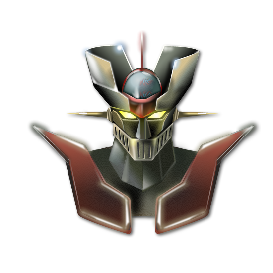

Mazinger Z series 
Mazinger Z is a Japanese super robot manga and anime series created, written and illustrated by Go Nagai. The original manga version is debuted on Weekly Shonen Jump in October 2, 1972 until it ended in August 13, 1973. The series was continued in a different format in TV Magazine from October 1973 to September 1974, with an anime adaptation airing on Fuji TV in December 3, 1972 to September 1, 1974.
Getter Robo series

Getter Robo is a multimedia franchise by Dynamic Productions co-created by Ken Ishikawa and his employer Go Nagai. It one of Dynamic Productions most popular franchises alongside Go Nagai's, Mazinger Z. Both of which are know for introducing popular tropes in the mecha genre, in Getter Robo's case, the combining mecha trope.
MS Gundam series

Mobile Suit Gundam is a 1979 anime television series created by Yoshiyuki Tomino and Hajime Yatate. Yoshikazu Yasuhiko did the character designs and Kunio Okawara was responsible for the mechanical designs, including the titular giant robot, the RX-78-2 Gundam. It started the Gundam franchise and Real Robot genre of mecha anime. The series was later re-edited for theatrical release, and split into three movies.